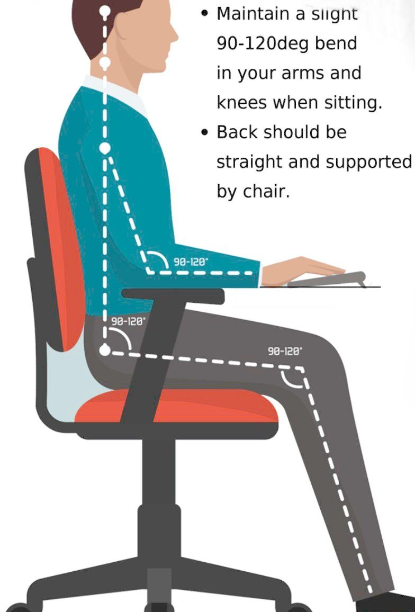

How professionals who work on computers can keep their eyes healthy?
During the last decades necessity of using computers have been grew more than people could imagine. Nowadays there are professions which are based only on computers. From this evolution appeared new positional diseases, computer vision syndrom discussed in this article.
Recommandations:
Take breaks. When doing close work, take occasional breaks and rest your eyes by looking away from the digital screen. Here I remembered my school teacher who recommended like a exercice: the concentrating eyes on a near object and on a far away object, changing it suddenly. This type of exercice improve the capacity of eye's diafragm and keep it active.
Blink often to refresh your eyes. Many people blink less than usual when working at a computer, which can contribute to dry eyes. Keeping them closed for some seconds also can improve the cornea humidity.
Use artificial tears. Over-the-counter artificial tears can help prevent and relieve dry eyes. Use them even when your eyes feel fine to keep them well-lubricated and prevent a recurrence of symptoms.
Check the lighting and reduce glare. Bright lighting and too much glare can strain your eyes and make it difficult to see objects on your monitor. The worst problems are generally from sources above or behind you, including fluorescent lighting and sunlight.
Adjust your screen settings, minimaze the blue light. Enlarge the type for easier reading. And adjust the contrast and brightness to a level that's comfortable for you.
Get Computer Glasses. Prescription eyewear specially designed for computer work may help you focus well on the screen. Also, this helps in reducing glare and computer eye strain. Ideally, choose photochromic lenses or lightly tinted lenses for your computer eyewear to reduce exposure to harmful blue light emitted by digital devices.
Do not forget your vitamins. If you have eye health issues then your doctor may prescribe you necessary vitamins. Do not forget to take them. Eat food rich in Vitamin A. This is important for a healthy vision and reinforces the macular tissues in your eyes, thus, keeping your vision clear and sharp. Food items rich in Vitamin A include cheese, egg yolk, milk, and butter.
Maintain a healthy distance. Laptop computers generally sit in laps and can be too close to the eyes. Ideally a computer screen should sit 20-24 inches (50-60cm) away from the eyes.

Symptoms of Computer Vision Syndrome:
Blurred vision
Double vision
Dry, itchy and irritated eyes
Increased light sensitivity
Eye strain and fatigue
Redness in the eyes
Difficulty in focusing
Gradual deterioration of vision
Headaches, backaches, neck pain
Difficulty in shifting focus from the monitor to any other object
 Veronica Ceban
Veronica Ceban